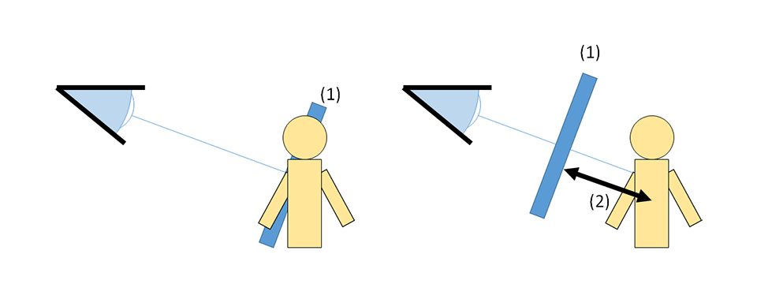
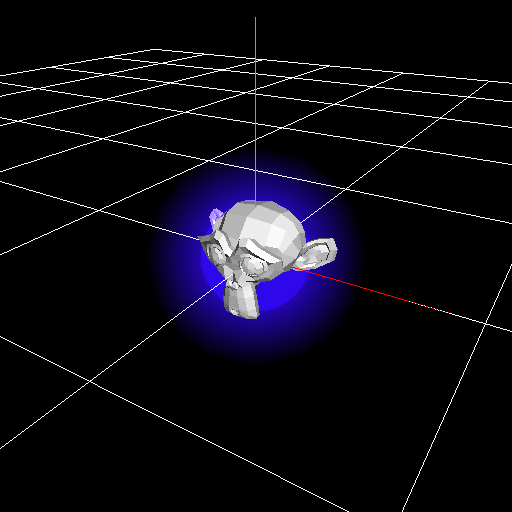
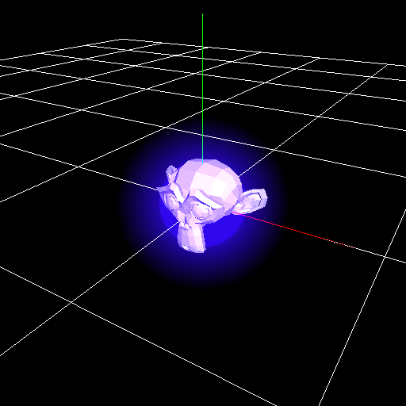
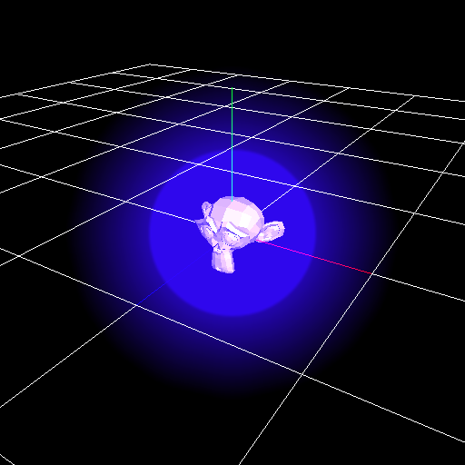
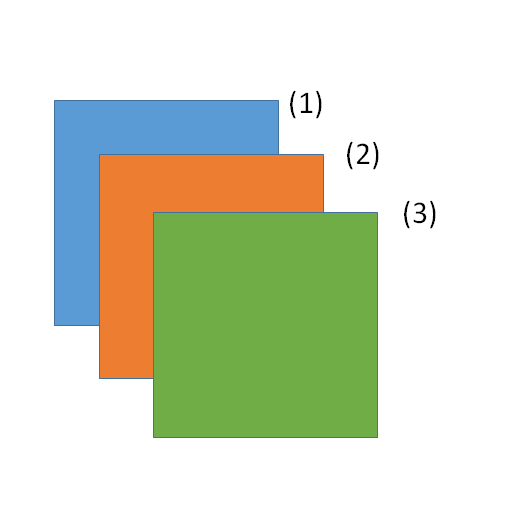

深度¶
概述¶
设置深度的相关参数。
参数¶
Z偏移¶
在渲染时在深度方向上移动粒子的位置。这个参数只影响渲染。在1.4版本中，只有设置了这个参数的粒子会被移动，子粒子不会被移动。例如，在渲染击中特效时，这个参数可以用于防止角色与特效直接接触。
(1)是一个接触到角色的特效。(2)是Z偏移。Z偏移防止角色与特效接触。
Z偏移：0 | Z偏移：2 |
|  |  |
禁用Z偏移导致的缩放¶
使用Z偏移可以移动渲染特效的位置，改变与摄像机的距离。当距离改变时，渲染的粒子的大小也会改变。你可以通过这个参数阻止这种变化的发生。
关闭 | 开启 |
|
缩放Z偏移¶
设置Z偏移的值是否会随着粒子的缩放值而变化。
关闭 | 开启 |
|  |  |
深度排序¶
设置同一个节点生成的粒子是否按照距离排序。如果开启了此参数，粒子会有更好的表现效果，但性能消耗也会增加。
关闭 | 开启 |
 |  |
渲染优先级¶
设置节点之间的渲染顺序。这个参数的值越高，则粒子越晚被绘制。这个参数也会影响到扭曲。如果渲染优先级低于0，扭曲将只影响到背景。粒子之间不会互相扭曲。如果渲染优先级大于或等于0，背景和渲染优先级小于0的粒子就会被扭曲。
下图是渲染优先级的粒子。(1)是(2)的父节点，其渲染优先级为0，(2)的渲染优先级为0。(3)的渲染优先级为1。可以看出，渲染的顺序是由渲染优先级决定的，在具有相同的渲染优先级的节点之间，子节点在后绘制。
抑制随深度变化的缩放变化¶
确保粒子以大致相同的尺寸显示，与粒子和相机之间的距离无关。 适用于锁定标记等。
还可以降低距离的影响。